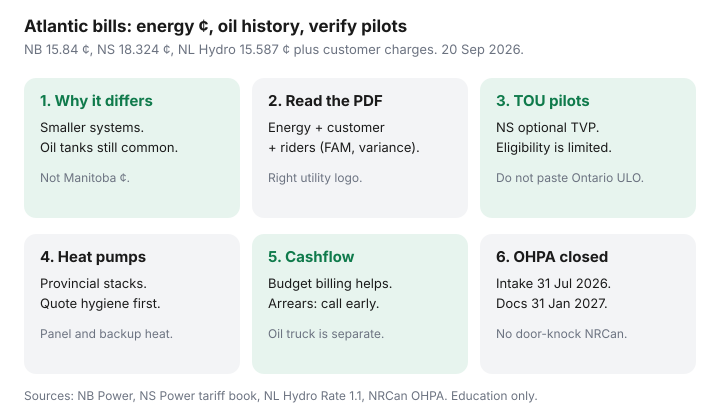

Utilities · Canada
Atlantic Canada Electricity Bills: Practical Saves for NB Power, NS Power, and NL Hydro Households
National how-tos skip Atlantic utilities and the oil tank in the basement. Atlantic Canada electricity rates NB Power NS Power tips have to start with higher residential ¢ than hydro-rich provinces, a customer charge that does not care about your kettle, and a heating-oil history that still shapes January.
Date-stamped residential energy ¢ (used 20 Sep 2026): NB Power 15.84 ¢ plus $30.82 urban / $33.82 rural-seasonal (14 Apr 2026); NS Power Domestic Service 18.324 ¢ plus $20.08 / month (tariff book “effective upon the Board’s Order,” with 1 Jan 2027 step-ups posted); NL Hydro Domestic (Rate 1.1) 15.587 ¢ plus $17.36 (≤200 A) on July 2026 schedules. Newfoundland Power customers use a sibling tariff — read the logo on the bill.
Disclosure: Heat-pump quote tools and smart thermostats are offer types. Saving Optimizer may earn a commission if we later add partner links. We do not currently claim NB Power, NS Power, NL Hydro, Efficiency Nova Scotia, or contractor partnerships. This is education — not a rebate approval or a quote.
Key takeaways
- Atlantic residential energy ¢ runs in the mid-to-high teens on the standard domestic tariffs above — plus a $17–$34 class of customer charges. That is not Manitoba’s 9.970 ¢ and not Rate D’s first tier.
- Read the bill as energy + customer/basic + riders (NB variance, NS FAM/DSM/storm, NL municipal tax / RSP-style adjustments). A ¢ screenshot without riders is incomplete.
- NS Power publishes optional time-varying / critical-peak / time-of-use domestic tariffs. Availability is limited — verify whether you can enrol before you buy a timer.
- Federal OHPA intake closed 31 Jul 2026. Remaining heat-pump paths are provincial (SaveEnergyNB, Efficiency Nova Scotia, NL programs). Verify live; do not assume a dead $10,000.
- Budget billing and arrears programs exist. Ask without shame. A winter disconnection conversation is not a character test.
Why Atlantic rates and heating oil history shape winter bills
Smaller systems, more thermal generation, and a long tail of oil-heated bungalows mean January is often two vendors: the hydro PDF and the oil truck. Viral “Canadian hydro is cheap” posts are usually quoting Québec or Manitoba energy ¢. They are not quoting a rural NB Power account plus 800 litres of furnace oil.
Convert oil, electric resistance, and heat-pump useful heat before you declare the utility “gouging.” The worksheet is gas vs electric heat — oil uses the same idea with litres and furnace efficiency. Closed federal stacks are in OHPA status.

Reading NB Power / NS Power / NL Hydro residential bill lines
| Utility | Energy ¢ (standard) | Customer / basic |
|---|---|---|
| NB Power (14 Apr 2026) | 15.39 ¢ base + 0.45 ¢ variance = 15.84 ¢ | $30.82 urban; $33.82 rural/seasonal |
| NS Power Domestic | 18.324 ¢ plus FAM, DSM, and storm riders | $20.08 / month (posted $21.04 from 1 Jan 2027) |
| NL Hydro Rate 1.1 | 15.587 ¢ (schedules including municipal tax / RSP adjustments) | $17.36 ≤200 A; $22.36 over 200 A |
P.E.I. and municipal utilities are not in that table. Maritime Electric and Saint John Energy customers should use their own rate cards. Labrador isolated and diesel systems are a different conversation than the Island interconnected Rate 1.1.
Labelled sketch: 1,200 kWh on NB Power urban ≈ 1,200 × 15.84 ¢ + $30.82 ≈ $221 before HST — lights and a dryer, or a mild heat-pump month, not an oil-heated January.
Time-varying or TOU pilots where they exist (verify at draft)
NS Power’s 2026 tariff book lists optional Domestic Service Time-of-Day, Critical Peak Pricing, and Time of Use tariffs, with interim energy charges tied to NSEB Decision M12499 on 2025/26 time-varying pricing. Some optional TOD language still ties to electric thermal storage or similar equipment. Do not assume you can enrol because a blog mentioned TOU. Call NS Power or read the availability paragraph on the live tariff before you buy a $200 timer.
NB Power and NL Hydro standard residential remains a flat energy ¢ plus a customer charge for most houses. If a pilot appears on your bill, price it with your hours the same way Ontario households price ULO — dinner-hour recovery can erase an overnight win. Ontario’s clock is a different machine; do not paste 39.1 ¢ into Halifax.
Heat-pump and efficiency program maps for the region
Efficiency brands differ: SaveEnergyNB / écoénergienb, Efficiency Nova Scotia, takeCHARGE / NL programs, efficiencyPEI. Patterns from the provincial rebate checklist and OHPA companion (re-verify):
- New Brunswick. Mini-split rebates have been listed up to $2,000. OHPA advance-payment registrations closed 30 Jun 2026; enrolled files had paperwork and completion clocks into 2026–27.
- Nova Scotia. Home Energy Assessment plus income-qualified stacks; combined oil-to-pump marketing has cited figures up to $25,000 while funding lasted. Pre-approval matters.
- Newfoundland and Labrador / P.E.I. Use the provincial administrator. P.E.I. point-of-sale heat-pump rebates ended 15 Apr 2026 with a claim window after purchase.
Quote hygiene: cold-climate equipment, backup heat, and panel capacity. See heat pump vs furnace and rebates by province.
Budget billing and arrears supports without shame framing
Equalized or budget payments exist at these utilities. They flatten the oil-adjacent winter spike on the electric bill; they do not cheapen oil. Watch usage so a true-up is not a second shock. Cross-Canada rules of thumb: equal billing.
If you cannot pay, call before the due date. Utilities document payment arrangements and point to provincial or charity emergency funds. LEAP is an Ontario name; Atlantic counterparts have different acronyms. You are not the first person to have a January oil delivery and a hydro arrears notice in the same week.
Oil-to-heat-pump context after federal OHPA intake changes
Federal OHPA intake closed 31 July 2026. Documents and paid work for existing files run to 31 January 2027. Nunavut and off-grid homes were out. Atlantic co-delivery used local rules and sometimes higher combined caps. If you never applied, you are in provincial-rebate territory, not a “reopen Ottawa” door pitch.
Price the machine against the oil truck with today’s ¢, not a 2024 grant stack. Air-seal first if the bungalow is a sieve. High-pressure “ENERGY STAR / NRCan approved” visits are a known scam pattern — the Government of Canada does not cold-call to inspect your furnace.
Sources & date stamps
- NB Power residential rates — 15.84 ¢/kWh; $30.82 urban / $33.82 rural-seasonal effective 14 Apr 2026 (used 20 Sep 2026).
- NS Power Tariff Book 2026 — Domestic Service $20.08 and 18.324 ¢; riders; optional TOD/CPP/TOU availability caveats; 1 Jan 2027 posted step-ups.
- NL Hydro / PUB NL Rate 1.1 schedules — $17.36 and 15.587 ¢ (July 2026 amended schedules; Newfoundland Power is a separate utility).
- NRCan, Oil to Heat Pump Affordability — intake closed 31 Jul 2026; documents 31 Jan 2027.
- SaveEnergyNB / Efficiency Nova Scotia / efficiencyPEI program pages — heat-pump and OHPA co-delivery clocks (re-verify live).
Frequently asked questions
Why are Atlantic electricity rates higher than Manitoba or Québec?
Different generation mix, system size, and fuel history — plus customer charges and riders. Compare 12-month all-in bills and heating fuel, not a single ¢ from a viral chart.
Does NB Power have Ultra-Low Overnight?
Standard NB Power residential is a flat 15.84 ¢ plus a customer charge as of 14 April 2026. Do not expect an Ontario ULO election. Ask NB Power only if a specific optional program appears on your account.
Can I still apply for federal OHPA in Nova Scotia or New Brunswick?
Not a new federal file. 31 July 2026 was the last apply day. Existing files continue with a 31 January 2027 document clock. Check provincial administrators for any remaining stacks.
Is NS Power time-of-use available to every house?
No. Optional time-varying tariffs have eligibility rules (including equipment in some TOD language). Read the tariff availability or call before you change habits or hardware.
Should I enrol in budget billing if I still heat with oil?
It can smooth the electric debit. It does not flatten the oil truck. Watch both, and read the true-up. Call about arrears plans early if both land in the same month.